🪱 沙丘：帝国起义
Dune: Imperium – Uprising · 设计：Paul Dennen · Dire Wolf Digital 出版（2023）· 《沙丘：帝国》独立续作，可单独游玩或与其合玩
来源：Dire Wolf 官方英文规则书（2023，bghub.org 转载 PDF：https://bghub.org/r/duneimperiumuprising.pdf ）
《沙丘：帝国起义》（Dune: Imperium – Uprising，Paul Dennen 设计，Dire Wolf Digital 出版）是《沙丘：帝国》的独立续作，可与其合玩，也可单独游玩。本书暂无官方简体中文版，本页为英文原版规则书全文翻译（20 页），并在对应章节嵌入原版页面图供对照——点击任意页面图即可放大查看。规则内容归版权方所有，翻译仅供个人学习查阅。
整理说明：本页为非官方翻译。译名与站内《沙丘：帝国》官方中文版（旅法师营地）保持一致：特使（Agent）、展示（Reveal）、秘牌（Intrigue）、说服力（Persuasion）、印章戒指（Signet Ring）、兵营（Garrison）、供应堆（Supply）、同盟（Alliance）、帝国索（Solari）、美琅脂（Melange）等；初代官方中文版把「回合（turn）」译作「阶段」（特使阶段/展示阶段），本页按《起义》原书结构译作「特使回合/展示回合」，含义相同。原书以 ◆ 标注的「与初代《沙丘：帝国》差异」条目，本页以「⭐《起义》差异」引出。原书 PDF 文字层个别连字丢失（如 di erent），不影响中文译文；全书组件数量均按原书照录。
引言（第 1 页）
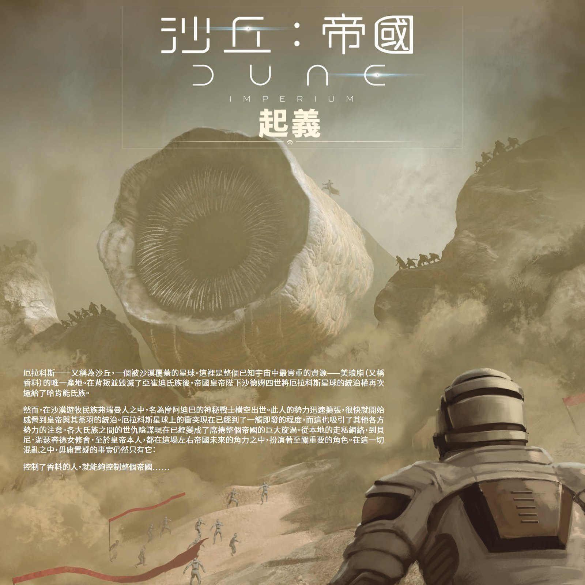
厄拉科斯。沙丘。沙漠行星。宇宙中最宝贵资源——香料美琅脂的唯一产地。在背叛并毁灭厄崔迪家族之后，皇帝沙达姆·科瑞诺四世再次将厄拉科斯的控制权交予哈克南家族。
但一个名叫穆阿迪布的神秘战士已在弗雷曼人中崛起，威胁着皇帝及其盟友的图谋。其他势力也纷纷注意到：厄拉科斯上的冲突已达临界点。曾经的大家族血仇，已演变为某种更宏大的博弈。从卑微的走私者，到贝尼·杰瑟里特姐妹会，再到皇帝本人，许多人将在决定帝国未来的进程中扮演关键角色。一如既往，唯有一条真理不变：
谁控制了香料，谁就控制了宇宙……
帝国概览（第 2 页）
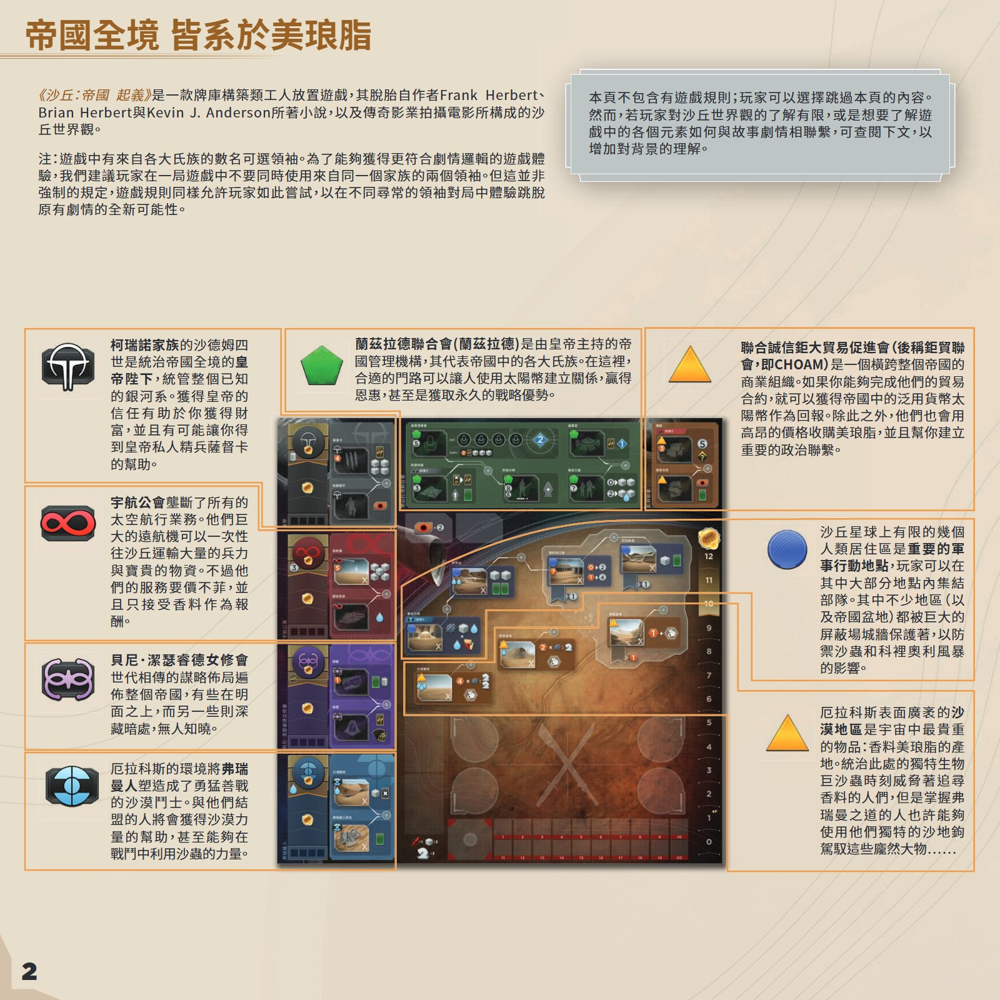
《沙丘：帝国——起义》是一个结合了牌组构筑与工人放置玩法的桌面游戏，设计灵感来自《沙丘》系列遗产：既有传奇影业的电影，也有弗兰克·赫伯特、布莱恩·赫伯特与凯文·J·安德森所著的经典系列小说。
注意：游戏附带部分大家族的多位领袖。为获得最正宗的故事体验，同一家族的多位领袖不应在同一局游戏中使用。但游戏同样允许非正统的领袖组合与「如果？」式的假设场景。
本页不包含具体的游戏规则，可以直接跳过。但如果你对《沙丘》的世界观不甚了解，或想了解游戏图板如何与故事相连，请阅读以下内容。
科瑞诺家族的沙达姆四世是已知宇宙的冷酷皇帝。通过与他建立私交，你的财富将会增长，还可能获得他的精锐军队——萨多卡军团的协助。
兰兹拉德是代表帝国众大家族的统治机构，由皇帝主持。帝国索在这里大有用处——无论是建立人脉、换取恩惠，还是获得永久性的战略优势——这绝非巧合。
宇联商会（Combine Honnete Ober Advancer Mercantiles，简称 CHOAM）是遍布帝国的巨型商业组织。完成他们的贸易合约可以获得帝国索——帝国的主要货币；向他们出售香料收益更丰，还能巩固重要的政治盟约。
宇航公会垄断了折叠空间航行。只要你付得起高昂的香料代价，他们巨大的远航机就能运送关键补给与大批部队。
贝尼·杰瑟里特姐妹会的阴谋与算计跨越数代人之久，遍布帝国，或明或暗。
沙丘上的人口聚居区是发动任何军事行动的重要据点，你可以在其中大多数地区招募部队。部分地区（连同帝国盆地）由坚固岩石筑成的屏障墙保护，免受沙虫侵袭。
沙丘的沙漠是你开采帝国最宝贵物质——香料美琅脂——的地方，也是巨型沙虫的家园。香料采集机靠近时必须逃逸，但那些掌握了弗雷曼之道与其驭虫钩的人，或许另有打算……
游戏组件（第 3 页）
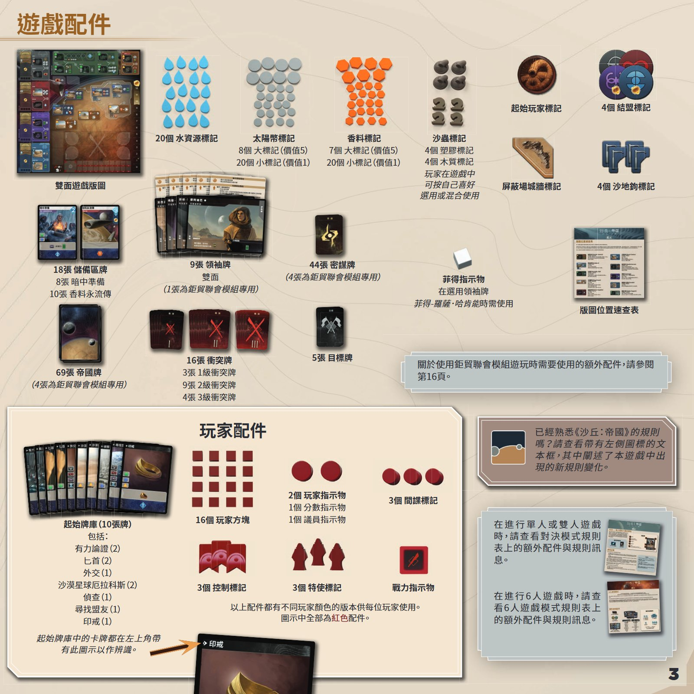
- 双面游戏图板
- 20 个水
- 帝国索：大号 8 枚（面值 5）、小号 20 枚（面值 1）
- 香料：大号 7 枚（面值 5）、小号 20 枚（面值 1）
- 沙虫：4 只塑料、4 只木质，可任选其一或混用
- 先手玩家标记
- 屏障墙指示物
- 4 个同盟指示物
- 4 个驭虫钩指示物
- 18 张备用牌：8 张『铺平道路』、10 张『香料永流传』
- 9 张领袖牌（双面，含 1 张仅配合 CHOAM 模块使用）
- 44 张秘牌（含 4 张仅配合 CHOAM 模块使用）
- 菲德指示物：配合『菲德-罗萨·哈克南』领袖使用
- 地区说明卡
- 69 张帝国牌组卡牌（含 4 张仅配合 CHOAM 模块使用）
- 16 张冲突牌：3 张一级冲突、9 张二级冲突、4 张三级冲突
- 5 张目标牌
要使用 CHOAM 模块，请参见第 16 页列出的额外组件与规则。
玩家组件
- 10 张起始牌组，包含：『有力论证』（2 张）、『匕首』（2 张）、『外交』（1 张）、『沙丘，沙漠行星』（2 张）、『侦察』（1 张）、『寻求盟友』（1 张）、『印章戒指』（1 张）。起始牌组的卡牌带有此标识。
- 16 个方块
- 2 个圆盘、1 个分数标记、1 个议员标记
- 3 个间谍
- 3 个控制指示物
- 3 个特使
- 战斗力指示物
以上组件每位玩家各有一套不同颜色，图中仅展示红色。
玩过《沙丘：帝国》？请留意此标识◆。它标出了《起义》与初代的不同之处。
1 人或 2 人游戏，请参见《宿敌》（Rivals）规则补充中的额外组件与规则。6 人游戏，请参见《六人游戏》（Six-Player Games）规则补充中的额外组件与规则。
开局配置（第 4–5 页）
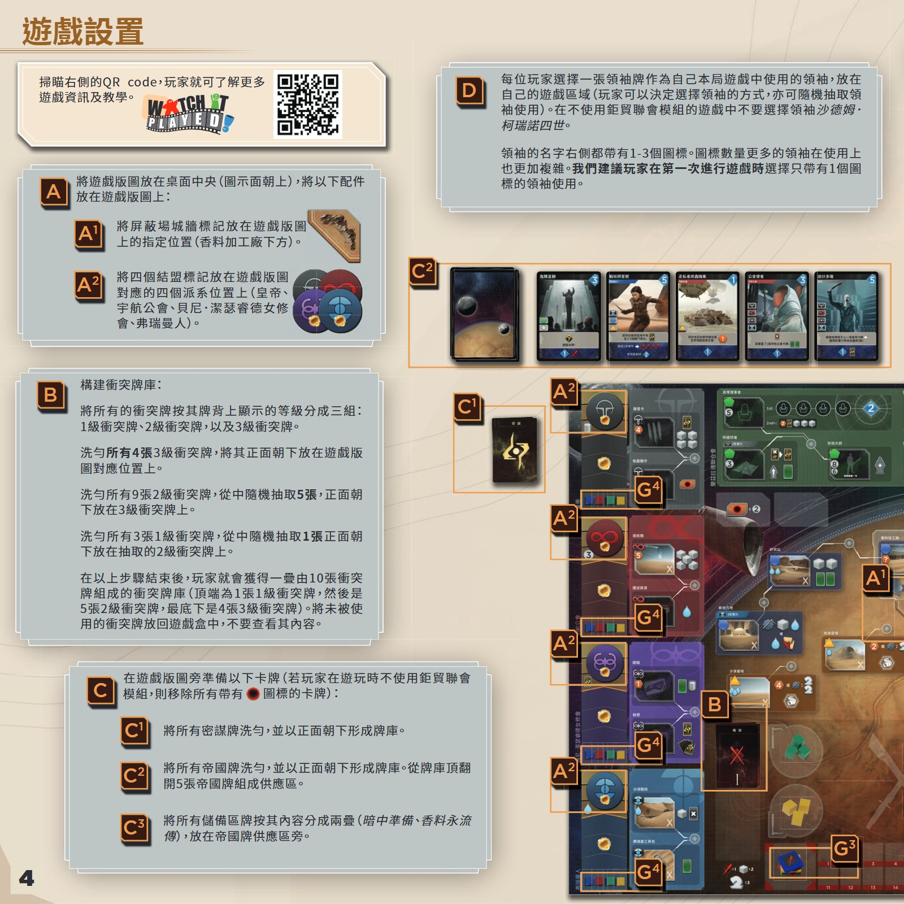
更喜欢看视频学习？〔原书此处附教学视频二维码〕
A 将游戏图板放入游戏区域（按图示一面朝上），然后将以下组件放在上面：
A1 将屏障墙指示物放在香料精炼厂地区下方的标记区域。
A2 将 4 个同盟指示物放在四个阵营影响力轨道的标记区域（皇帝、宇航公会、贝尼·杰瑟里特、弗雷曼人）。
B 组建冲突牌组：按牌背将冲突牌分为三组：一级冲突、二级冲突、三级冲突。将 4 张三级冲突牌洗混，全部正面朝下放在游戏图板的标记区域。将 9 张二级冲突牌洗混，抽 5 张正面朝下叠放在三级冲突牌之上。将 3 张一级冲突牌洗混，抽 1 张正面朝下叠放在二级冲突牌之上。
现在，游戏图板上应有一叠 10 张的冲突牌组：顶端 1 张一级冲突，其下 5 张二级冲突，底部 4 张三级冲突。未用到的冲突牌不看牌面，放回游戏盒。
C 沿游戏图板边缘准备下列卡牌（若不使用第 16 页介绍的 CHOAM 模块，略去所有标有 ◇ 的卡牌）：
C1 将秘牌牌组洗混，正面朝下放置。
C2 将帝国牌组洗混，正面朝下放置。从中发 5 张正面朝上，组成公共牌池。
C3 在公共牌池旁，将备用牌分两叠放置：一叠为『铺平道路』，一叠为『香料永流传』。
D 每位玩家拿取 1 张领袖放在面前（可自选，也可随机抽取）。除非使用 CHOAM 模块，否则不要使用沙达姆·科瑞诺四世。领袖名字后有 1 至 3 个图标，图标越多，策略越复杂。首局游戏建议每位玩家选择只有 1 个图标的领袖。
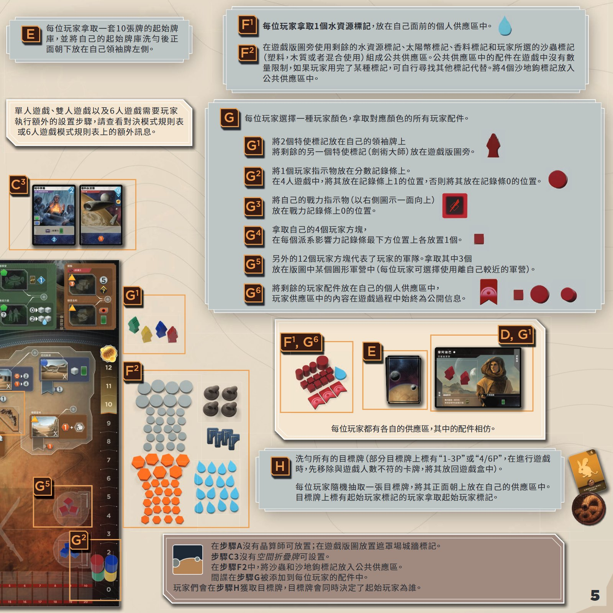
E 每位玩家拿取 10 张起始牌组，洗混后正面朝下放入自己领袖左侧的供应堆。
1 人、2 人或 6 人游戏需要额外设置，详见单独的规则补充：《宿敌》或《六人游戏》。
F1 每位玩家拿取 1 个水，放入自己的供应堆。
F2 在游戏图板旁建立银行：放入帝国索、香料、剩余的水指示物，以及你偏好的沙虫（木质、塑料或两者兼有）。这些组件数量不设上限；若不够用，可用任何方便的替代物。同时将 4 个驭虫钩指示物放入银行。
G 每位玩家选择一种颜色，拿取该颜色的全部组件。
G1 将 2 个特使放在你的领袖上。第 3 个特使（你的剑术大师）放在游戏图板旁。
G2 将 2 个圆盘之一放在分数条上。4 人游戏放在第 1 格，其他人数放在第 0 格。
G3 将你的战斗力指示物（按右图一面朝上）放在战斗力条的 0 位。
G4 将 4 个方块分别放在四个阵营影响力轨道最底部的空格上。
G5 其余 12 个方块是你的部队。将其中 3 个放入游戏图板上四个圆形兵营之一（每位玩家取离自己最近的一个）。
G6 将其余组件放入供应堆，置于所有玩家可见之处。
H 将目标牌洗混。（部分标有「1-3P」或「4/6P」字样，对应相应人数；与游戏人数不符的放回游戏盒。）每位玩家随机抽 1 张目标牌，正面朝上放入自己的供应堆。目标牌上印有先手玩家标记图案的玩家，拿取先手玩家标记。
⭐《起义》差异（老玩家速览）：
步骤 A 中没有门泰特；改为将屏障墙指示物放在图板上。
步骤 C3 中没有折叠空间牌。沙虫与驭虫钩在步骤 F2 中放入银行。间谍作为新组件，在步骤 G 中随玩家组件一并拿取。
目标牌在步骤 H 中分发，并由此决定先手玩家。
游戏概述与核心概念（第 6–7 页）
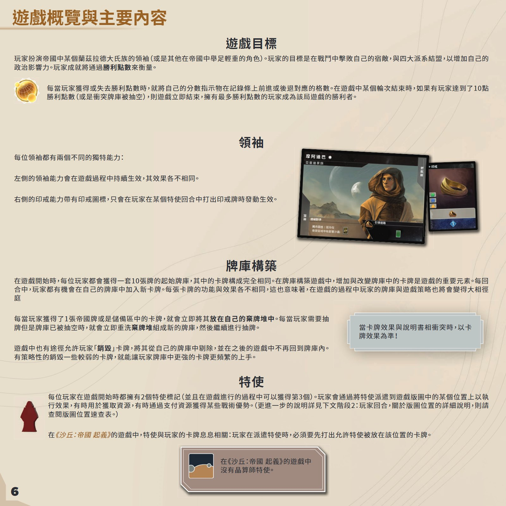
目标
你是代表兰兹拉德某个大家族（或银河舞台上另一位权势人物）的领袖。在战斗中击败对手，施展政治影响力，与四大阵营结成同盟。你的成就将以胜利点数衡量。
每当你获得或失去胜利点数，将你的分数标记沿分数条上移或下移一格。回合结束时，若任意玩家达到 10 点或更多胜利点数（或冲突牌组已空），游戏结束，胜利点数最多者获胜。
领袖
每位领袖有两种不同的独特能力：第一种在左侧，对局中按领袖牌面说明使用；第二种在右侧，带有印章戒指图标，当你在特使回合打出『印章戒指』牌时激活。
牌组构筑
开局时，你与其他玩家拥有相同的 10 张牌组。扩充并改造这套牌组，正是牌组构筑游戏的核心。每回合中，你可以获取新卡加入牌组。由于卡牌效果各异，随着游戏进行，每位玩家的牌组与策略都会走向不同的方向。
每当你获取一张新的帝国牌或备用牌，先将其放入弃牌堆。任何时候你因牌组已空而无牌可抽，将弃牌堆洗混组成新牌组，然后按需继续抽牌。
游戏中也存在「销毁」卡牌的手段——将其从牌组中彻底移除，直至本局结束。通过策略性地销毁较弱的卡牌，你能更频繁地抽到强牌。
任何类型的卡牌都可以覆盖游戏的常规规则！
特使
开局时你拥有 2 个特使（游戏中最多可获得第 3 个）。你把特使派往游戏图板上的地区，有时收集资源，有时支付资源以推进策略。（完整说明见「阶段 2：玩家行动」；各地区详情见单独的地区说明卡。）
在《沙丘：帝国——起义》中，特使与卡牌紧密关联：你必须先打出允许你这样做的卡牌，才能把特使派往图板地区。
⭐《起义》差异：《起义》中没有门泰特特使。
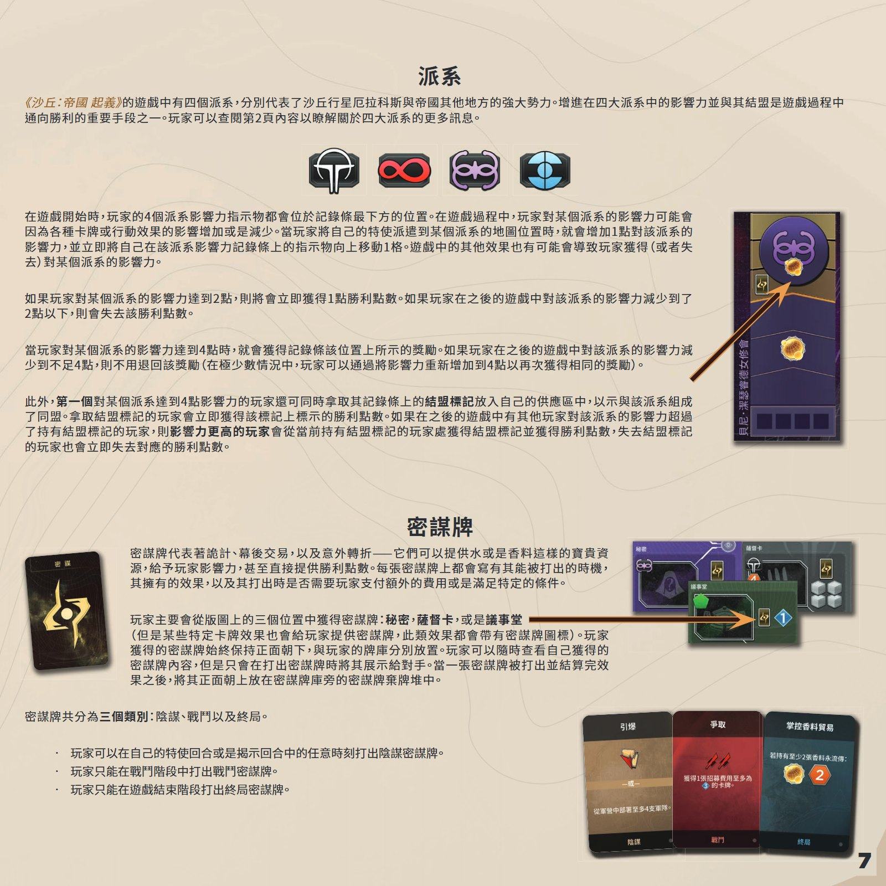
阵营
在《沙丘：帝国——起义》中，四大阵营代表沙丘乃至帝国各处的强大势力。提升影响力并与其中一个或多个阵营结盟，是本游戏通往胜利的关键路线之一。各阵营的简介见第 2 页「帝国概览」。
你的阵营方块从各阵营影响力轨道的底部开始。整个游戏过程中，你与某阵营的影响力会随你打出的卡牌和采取的行动而升降。当你把特使派往某阵营的图板地区，将你的方块沿该阵营影响力轨道上移一格，获得 1 点影响力。其他游戏效果也会让你的方块沿轨道上移（偶尔下移）。
当你与某阵营的影响力达到 2 时，获得 1 点胜利点数；若跌回 2 以下，失去该胜利点数。当你达到 4 点影响力时，获得轨道上该格所示的奖励；若跌回 4 以下，无需交还奖励。（若先退后进，同一奖励有可能——尽管罕见——被再次获得。）率先与某阵营达到 4 点影响力的玩家，还获得该阵营的同盟：从轨道上拿取同盟指示物放入自己的供应堆，并获得同盟指示物上所示的胜利点数。若之后被对手在轨道上攀升反超，必须将同盟指示物交给该对手：你失去该胜利点数，对手获得它。
秘牌
秘牌代表暗算、幕后交易与意想不到的反转——它们可以提供水或香料等资源、提升你与某阵营的影响力，甚至直接为你赢取胜利点数。每张秘牌都标明何时可以打出、有什么效果，以及打出是否有费用或条件。你主要通过「秘密」「萨多卡」「集会堂」等图板地区获得秘牌（但请留意卡牌上出现秘牌图标的其他机会）。秘牌面朝下保存，与你的牌组分开放置；你可以随时查看，只在打出时向对手展示。秘牌打出并结算后，正面朝上放入秘牌牌组旁的弃牌堆。
秘牌共有三种类型：阴谋、战斗与终局。
- 阴谋秘牌可以在你的特使回合或展示回合中的任意时间打出。
- 战斗秘牌只能在战斗阶段打出。
- 终局秘牌只能在游戏结束时打出。
回合结构（第 8 页）
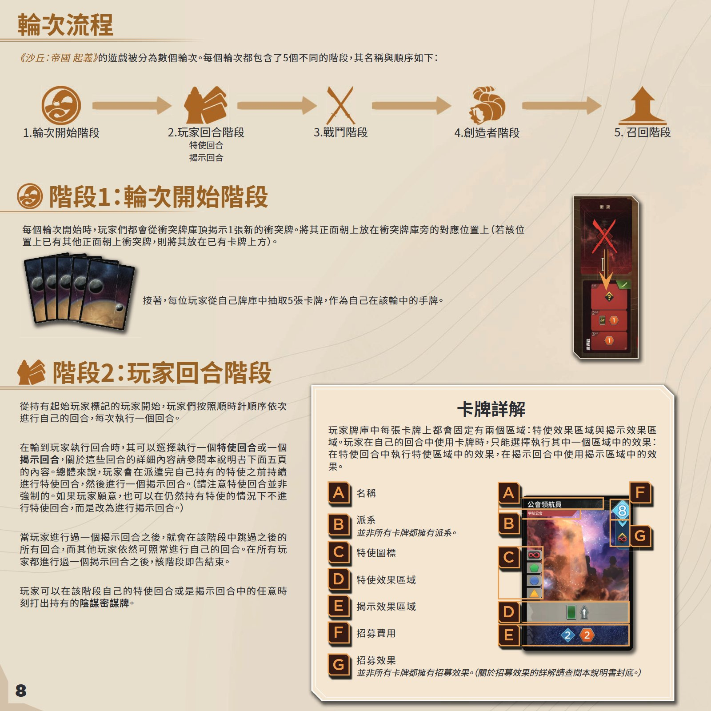
《沙丘：帝国——起义》以一系列回合进行。每回合依序包含五个阶段：
- 回合开始
- 玩家行动（特使回合、展示回合）
- 战斗
- 制造者
- 召回
阶段 1：回合开始
每回合开始时，从冲突牌组顶翻开 1 张新的冲突牌，正面朝上放在冲突牌组旁（压在之前回合可能剩余的冲突牌之上）。
然后，每位玩家从自己的牌组抽 5 张牌，构成该回合的手牌。
阶段 2：玩家行动
从持有先手玩家标记的玩家开始，按顺时针方向轮流行动，每次一人一回合。
轮到你时，你将进行特使回合或展示回合。这两种回合将在随后五页中详述。一般而言，你会连续进行特使回合，直到无特使可派，然后进行展示回合。（注意：特使回合是可选的。如果你愿意，可以在仍有特使的情况下直接进行展示回合。）
一旦你进行了展示回合，本阶段你的后续行动全部跳过，其余玩家继续完成他们的回合。当所有玩家都进行了展示回合，本阶段结束。
在本阶段中，你可以在自己的特使回合或展示回合的任意时间打出你拥有的阴谋秘牌。
卡牌解剖
牌组中每张卡牌的效果分为两部分：特使框与展示框。任一回合中，你只能使用其中一个框内的效果：特使回合使用特使框，展示回合使用展示框。
- A 名称
- B 阵营（并非所有卡牌都属于某个阵营）
- C 特使图标
- D 特使框
- E 展示框
- F 说服力费用
- G 获取效果（并非所有卡牌都有获取效果。关于获取，详见本规则书封底。）
玩家行动 · 特使回合（第 9–11 页）
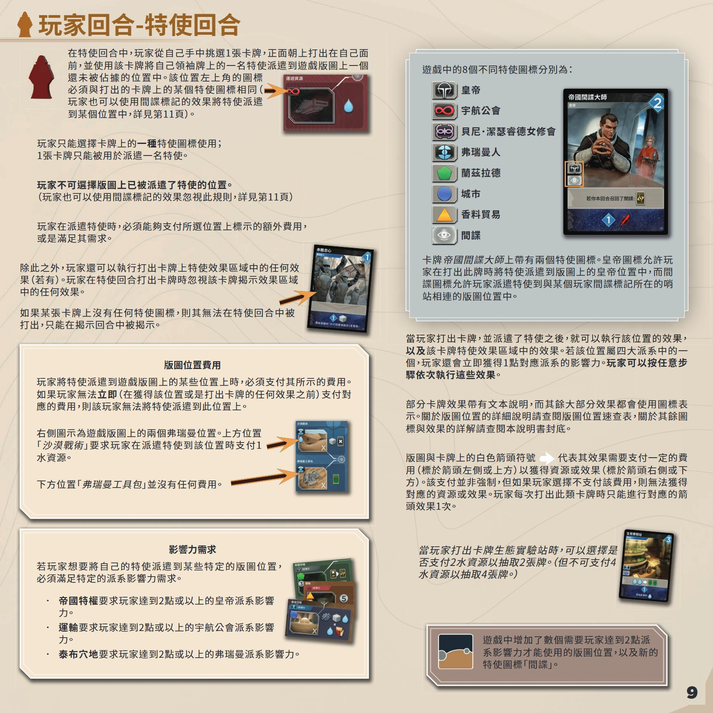
在特使回合中，你从手牌打出 1 张牌正面朝上放在面前，用它把你的一名特使从领袖派往游戏图板上一个未被占据的地区。该地区左上角必须有一个图标，与你所打出的卡牌上的某个特使图标匹配（不过间谍可以绕过这一限制，见第 11 页）。
你只能选择卡牌上的一个特使图标；一张卡不能派出多个特使。
不能把特使派往已有特使所在的地区（间谍可以提供绕过方式，见第 11 页）。
你必须支付你所选地区的一切费用，并满足其要求。
此外，你所打出的卡牌的特使框可能在特使回合打出它时提供效果。（特使回合中忽略该卡的展示框。）
如果一张卡上没有任何特使图标，你不能在特使回合打出它。它只能在展示回合中展示。
地区费用：要把特使派往某些图板地区，你必须支付费用。如果你无法立即支付费用（在结算该地区或所打卡牌的任何效果之前），就不能把特使派往那里。
图中是游戏图板上的两个弗雷曼地区。上方的「沙漠战术」要求你支付 1 个水才能把特使派往那里；下方的「弗雷曼装备」没有额外费用。
影响力要求：要把特使派往某些图板地区，你必须对特定阵营拥有足够的影响力。
- 「帝国特权」：要求皇帝影响力达到 2 或更多。
- 「船运」：要求宇航公会影响力达到 2 或更多。
- 「泰布穴地」：要求弗雷曼人影响力达到 2 或更多。
八种特使图标分别是：皇帝、宇航公会、贝尼·杰瑟里特、弗雷曼人、兰兹拉德、城市、香料贸易、间谍。
图中的『帝国谍报总管』有两个特使图标：皇帝图标允许你把特使派往两个皇帝图板地区之一；间谍图标允许你把它派往任何与「有你的间谍驻扎的观察哨」相连的地区。
当你打出卡牌并把特使派往图板地区时，你获得该地区的效果，以及所打卡牌特使框中的效果。若该地区属于某个阵营，你还将自己的方块沿其影响力轨道上移一格。这些效果可以按任意顺序执行。
有些卡牌效果以文字写就，但许多以图标表示。所有图板地区的说明见单独的地区说明卡，所有游戏图标与附加游戏术语见本规则书封底。
卡牌与图板上的箭头表示：存在一项费用（箭头左侧或上方），支付后才能获得效果（箭头右侧或下方）。你永远不会被强制支付此类费用；但若不支付，就得不到相应效果。你的每个回合中，每项费用只能支付一次并获得一次效果。
打出『生态测试站』时，你可以决定不支付 2 个水来抽 2 张牌。（你不能支付 4 个水来抽 4 张牌。）
⭐《起义》差异：出现了额外的需要 2 点阵营影响力的地区，以及一个新的特使图标（间谍）。
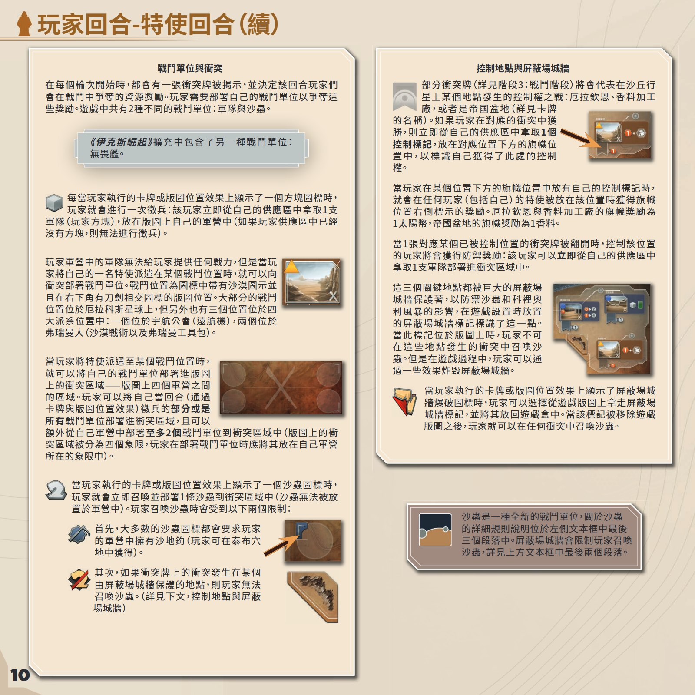
单位与冲突
每回合开始时，当前的冲突牌被翻开，为玩家们提供将在战斗中争夺的奖励。玩家需要部署单位来为这些奖励而战。单位有两种：部队和沙虫。
《伊克斯崛起》扩展引入了另一种单位：无畏舰。
每当方块图标出现在卡牌或图板地区上，你招募 1 个部队：从你的供应堆拿取 1 个部队，放在游戏图板上的兵营中。（若供应堆中的部队用尽，须等有部队返回后才能继续招募。）
然而，兵营中的部队无助于你赢得战斗。当你把特使派往战斗地区时，才可以把部队部署到冲突。战斗地区是带有沙漠插画与交叉刀剑的图板地区。其中大多数位于沙丘行星上，另有三个位于阵营区域：宇航公会 1 个（「远航机」），弗雷曼人 2 个（「沙漠战术」与「弗雷曼装备」）。
当你把特使派往战斗地区，你可以将单位部署到冲突区——游戏图板上被各兵营环绕的中央区域。你可以部署本回合招募的任意或全部单位（包括来自图板地区和你所打卡牌的单位），外加来自你兵营的至多 2 个部队。（冲突区分为四个象限。把你部署的单位放在离你兵营最近的象限。）
每当沙虫图标出现在卡牌或图板地区上，你召唤 1 条沙虫并立即将其部署到冲突中。（沙虫绝不能放入兵营。）两项限制约束沙虫的召唤：
第一，沙虫图标通常前置一项要求：你的兵营上须有驭虫钩指示物（可在泰布穴地获得）。
第二，不能向受屏障墙保护的冲突召唤沙虫（见下文「要点地区与屏障墙」）。
要点地区与屏障墙
部分冲突牌（详见「阶段 3：战斗」）代表发生在沙丘三处地点之一的争夺：厄拉奇恩、香料精炼厂或帝国盆地（以牌题为准）。若你赢得此类冲突，奖励中包括对该图板地区的控制权：从你的供应堆拿取 1 个控制指示物，放在相应地区下方的旗帜上。
只要你的控制指示物在这些地区之一上，每当任意玩家（包括你自己）把特使派往该地区，你都获得所示的奖励：厄拉奇恩或香料精炼厂为 1 帝国索，帝国盆地为 1 香料。
当翻开的冲突牌对应你已控制的地区时，你获得一项防御奖励：你可以从供应堆部署 1 个部队到冲突中。
这三处要点地区由一道屏障墙保护，免受风暴与沙虫侵袭——屏障墙是设置时放在图板上的指示物。该指示物保持在位期间，不能向这三处受保护地点的冲突召唤沙虫。然而，玩家有可能在屏障墙上炸开缺口。
当屏障墙引爆图标出现在卡牌或图板地区上，你可以将屏障墙指示物从图板上的原位移除（放回游戏盒）。该指示物一经移除，沙虫便可以被召唤至任何冲突。
⭐《起义》差异：沙虫是一种新的单位类型，详见左侧最后三段。屏障墙对它们的防护见上述最后两段。
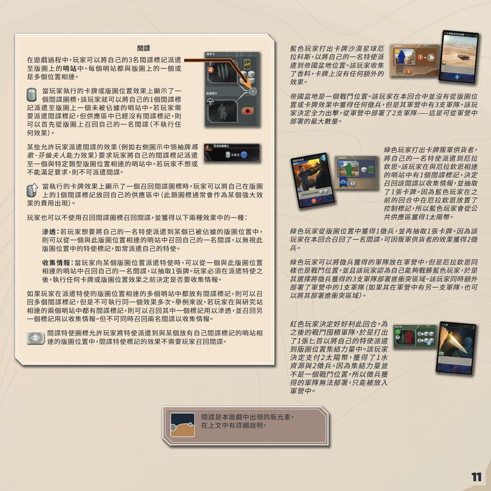
间谍
图板各处分布着多个观察哨，玩家可以把间谍放置其上。每个观察哨与一个或多个图板地区相连。
每当间谍图标出现在卡牌或图板地区上，你可以从供应堆将 1 个间谍放在图板上一个未被占据的观察哨。若你需要放置间谍时供应堆中没有，你可以先无偿召回自己的一个间谍。
某些允许放置间谍的效果（如右图『玛戈·芬伦夫人』领袖的能力）会指定观察哨必须连接某个特定特使图标，否则你不能放置间谍。
当召回间谍图标出现在卡牌上，你可以把你的一个间谍从观察哨放回供应堆。（这通常是获取强效果所需支付的费用。）
间谍还可以（不经由卡牌）被召回，用于以下两种效果之一：
渗透：若你想把特使派往已被其他玩家占据的地区，可以从相连的观察哨召回你的间谍，无视其他玩家的特使，把你的特使派往同一地区。
收集情报：每当你把特使派往图板地区，你可以从相连的观察哨召回你的间谍，抽 1 张牌。你必须在放置特使后立即选择是否这样做（在获得该地区或你所打卡牌的任何效果之前）。
你不能把同一个间谍既用于渗透又用于收集情报。（不过在「研究站」等某些地区，你可以召回一个间谍用于渗透、另一个间谍用于收集情报。）
间谍特使图标允许你把特使派往与你当前有间谍驻扎的观察哨相连的图板地区。以此为目的不召回间谍。
示例：
小王打出『沙丘，沙漠行星』，把特使派往帝国盆地。他收取该地区的香料。他的卡牌没有提供额外的特使回合效果。
帝国盆地是一个战斗地区。小王无论通过所打的卡牌还是所去的地区都没有招募部队。但他的兵营里有 3 个部队。他决定全力一搏，从兵营向冲突部署 2 个部队——这是允许的最大数量。
小李打出『叛军补给商』，把特使派往厄拉奇恩。她在那里有一个间谍，决定召回它以收集情报，抽 1 张牌。小王此前回合的控制指示物在那里，所以小李从银行拿取 1 帝国索。
小李从地区招募 1 个部队，又抽了 1 张牌。凭借『叛军补给商』，因为她本回合召回过间谍，她额外招募了 2 个部队。
小李可以把这 3 个新招募的部队留在兵营。但厄拉奇恩也是战斗地区，她嗅到了战胜小王的机会，于是把这些部队部署到冲突中，外加她兵营中原有的 1 个部队。（若她的兵营里还有第二个部队，她本可以一并部署。）
小张决定用这个回合为之后的回合积攒部队。他打出『匕首』，把特使派往「集结部队」。他决定支付该地区的可选费用 2 帝国索，获得 1 个水和 2 个部队。然而这里不是战斗地区，他不能把部队部署到冲突，只能放入兵营。
⭐《起义》差异：间谍是游戏的新元素，详见上文。
玩家行动 · 展示回合（第 12–13 页）
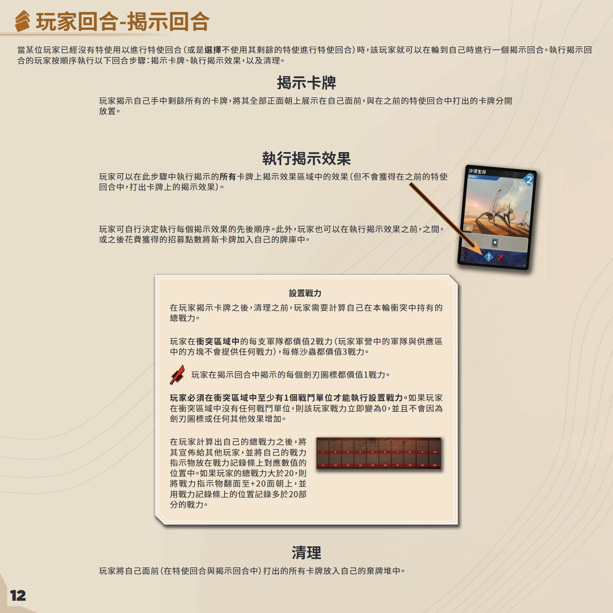
当玩家没有更多特使可进行特使回合（或选择不使用剩余的特使）时，该玩家进行展示回合。展示回合依序包含以下步骤：展示卡牌、结算展示效果、清理。
展示卡牌
将手牌中剩余的所有卡牌翻开，正面朝上展示在你面前。与你在本回合早前特使回合中打出的牌分开放置。
结算展示效果
你现在获得你刚展示的所有卡牌展示框中的效果（但不包括你本回合早前特使回合打出的卡牌的效果）。你可以按任意顺序结算展示效果。此外，你可以在展示效果之前、之间或之后，使用你获得的说服力来为新牌组获取新卡。
设定战斗力：在展示卡牌之后、清理之前，你还要为本回合的战斗合计你的战斗力。冲突中你的每个单位都为战斗力添砖加瓦（兵营或供应堆中的单位没有贡献）。每个部队值 2 点战斗力，每条沙虫值 3 点战斗力。
你在展示回合中展示的每把剑值 1 点战斗力。你必须至少有 1 个单位在冲突中才能拥有战斗力。若你的最后一个单位被移除，你的战斗力即变为 0。合计战斗力后，向对手宣布，并将你的战斗力指示物移到战斗力条上相应的格。若你的战斗力超过 20，将指示物翻到 +20 一面，从轨道开头重新计数。
清理
将你面前所有的卡牌（来自特使回合与展示回合的）放入你的弃牌堆。
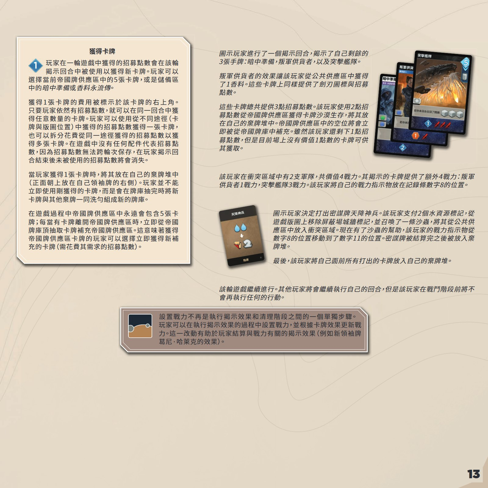
获取卡牌
你在回合中获得的说服力，在展示回合中用来为新牌组获取新卡。你可以获取公共牌池中的任意一张卡牌，或备用牌中的『铺平道路』『香料永流传』。
获取一张卡的费用印在该卡的右上角。只要你拥有足够支付的说服力，你可以获取任意数量的卡牌。你可以把来自多个来源（卡牌与图板地区）的说服力凑在一起获取一张卡，也可以把单一来源的说服力拆开支付多张卡。说服力没有任何指示物表示，因为它永远无法储存；你在展示回合中没有用完的说服力即告损失。
获取一张卡时，将其放入你的弃牌堆（正面朝上放在你的领袖右侧）。你无法立刻使用新获取的卡；当你无牌可抽时，它才会与弃牌堆的其余卡牌一起洗混。
公共牌池必须始终保有 5 张卡；一旦不足，立即从帝国牌组顶补足缺失的卡。这意味着你获取一张卡之后，可以接着获取替换它的新卡（如果你有足够的说服力）。
示例：
小王进行展示回合，展示手中剩余的 3 张牌：『铺平道路』『叛军补给商』『打击舰队』。
『叛军补给商』有待结算的效果：小王从银行拿取 1 个香料。他的卡牌还提供了说服力和剑。
小王的卡牌共提供 3 点说服力。他用其中 2 点获取公共牌池中的『沙漠求生』，放入弃牌堆。然后从帝国牌组发一张新卡，填补牌池的空位。尽管小王还剩 1 点说服力，但没有费用为 1 的卡可供获取。
小王在冲突中有 2 个部队，提供合计 4 点战斗力。他本回合展示的卡牌另提供 4 点：『叛军补给商』的 1 把剑和『打击舰队』的 3 把剑。他将战斗力指示物放在战斗力条的 8。
小王决定打出一张秘牌『意外盟友』。他支付 2 个水，将屏障墙指示物从图板上移除，然后召唤 1 条沙虫——从银行拿取，直接放入冲突。加入沙虫后，小王把战斗力指示物从 8 调整到 11，然后弃掉这张秘牌。
最后，小王把面前剩余的卡牌全部放入弃牌堆。
阶段继续。小李和小张稍后将进行展示回合。小王在战斗阶段之前不再行动。
⭐《起义》差异：「设定战斗力」不再是「结算展示效果」与「清理」之间一个明确的步骤。你可以在结算展示效果期间的任意时刻设定战斗力，并按需随时更新。这一区别使得新领袖『格尼·哈莱克』等卡牌能够在你的展示回合中引用你的战斗力。
阶段 3：战斗（第 14–15 页）
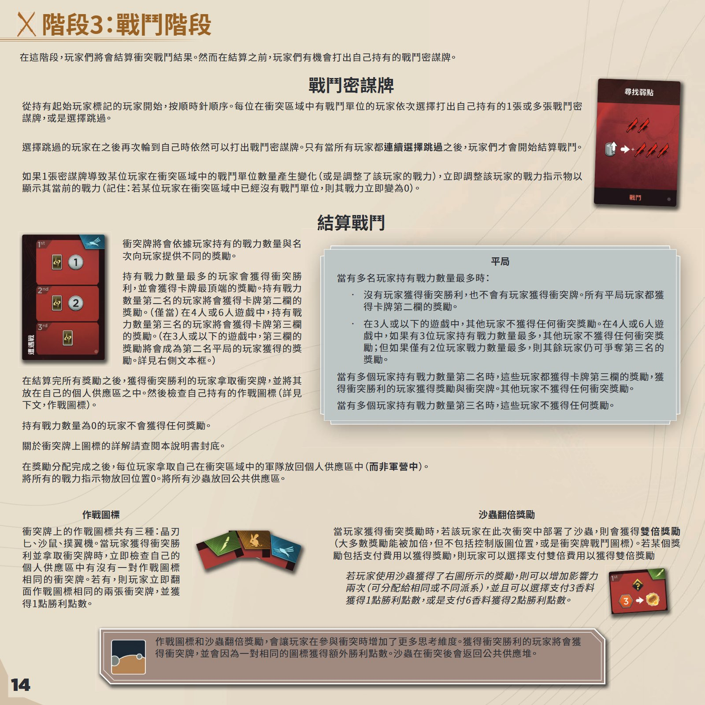
战斗在本阶段结算，但在那之前，玩家有机会打出战斗秘牌。
战斗秘牌
从持有先手玩家标记的玩家开始，按顺时针方向，每位在冲突中拥有至少 1 个单位的玩家可以打出任意数量的战斗秘牌，或者让过。
你不会因为在本阶段早前让过，就必须一直让过。当所有参与战斗的玩家连续让过，你们随即结算战斗。
若一张卡牌改变了某玩家在冲突中的单位数量（或以其他方式改变其战斗力），该玩家相应调整战斗力条上的战斗力指示物。（记住：若你在冲突中没有单位，你的战斗力就是 0。）
结算战斗
冲突牌的奖励按玩家的战斗力（以战斗力条所示）分配。
战斗力最高的玩家赢得冲突，获得冲突牌上的第一项奖励。战斗力第二高的玩家获得第二项奖励。在 4 人（或 6 人）游戏中，战斗力第三高的玩家获得第三项奖励。（3 人或更少人数的游戏中，第三项奖励只在并列第二时使用，见右侧说明框。）最后，赢家拿走冲突牌，正面朝上放入自己的供应堆，然后检查战斗图标匹配（见下文「战斗图标」）。
战斗力为 0 的玩家得不到任何奖励。
平局
当任意数量的玩家并列第一时：
- 他们各获得第二项奖励。无人赢得冲突，无人把冲突牌收入供应堆。
- 若游戏为 3 人或更少，该冲突不再发放其他奖励。在 4 人（或 6 人）游戏中，若有三人或更多并列第一，不再发放其他奖励；若恰好两人并列第一，其余玩家争夺第三项奖励。
当任意数量的玩家并列第二时，他们各获得第三项奖励。冲突的赢家保留其奖励（并把冲突牌收入供应堆），但不再发放其他奖励。
当任意数量的玩家并列第三时，他们什么都得不到。
所有奖励发放完毕后，每位玩家把自己的部队从冲突中收回放入供应堆（而非兵营）。所有战斗力指示物归零，放回战斗力条的 0 位。冲突中的沙虫全部放回银行。
战斗图标
共有三种战斗图标：晶牙匕、沙漠鼠与扑翼机。当你赢得一场冲突并把该牌收入供应堆时，检查你的供应堆中是否另有一张相同战斗图标的正面朝上冲突牌或目标牌。若有，你必须把匹配的一对牌翻为面朝下，并获得 1 点胜利点数。
沙虫奖励翻倍
领取奖励时，若你在冲突中有一条或多条沙虫，你领取的奖励翻倍。大多数奖励都可以翻倍（但取得地区控制权不能翻倍，你赢下的冲突牌上的战斗图标也不能）。当一项奖励提供「支付费用以换取某物」的选择时，你可以再支付一次该费用，再获得一次该物。
若你以一条或多条沙虫赢得此奖励，你获得 2 点影响力（同一阵营，或分属两个不同阵营），还可以支付 3 香料获得 1 点胜利点数，或支付 6 香料获得 2 点胜利点数。
⭐《起义》差异：战斗图标与沙虫奖励翻倍为战斗带来了新的策略考量。在其他奖励领取完毕后，冲突的赢家把冲突牌收入供应堆并检查战斗图标匹配。沙虫在战斗后放回银行。
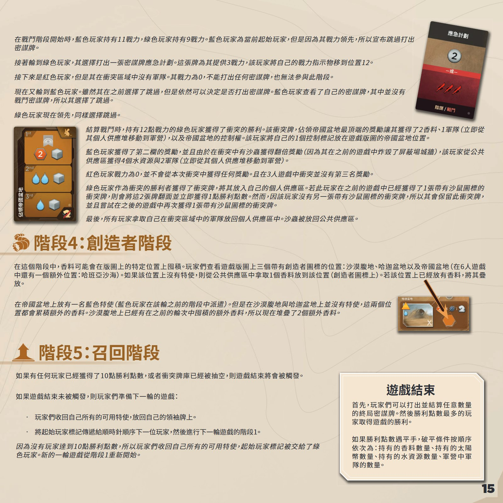
示例：
战斗阶段开始时，小王有 11 点战斗力，小李有 9 点。小王持有先手玩家标记，但他在冲突中本就领先，于是让过了打战斗秘牌的机会。
小李接下来行动，打出一张秘牌『应急预案』。这给她 3 点额外战斗力，她把战斗力指示物推进到 12。
按玩家顺序接下来是小张，但他在冲突中没有部队。他战斗力为 0，无法参与本阶段。
现在又轮到小王。尽管他在本阶段早前让过，他现在仍可以决定打出秘牌。但他检查了自己的秘牌，其中没有一张是战斗秘牌，于是再次让过。
小李对胜利心满意足，同样让过。
小李以 12 点战斗力赢得冲突。冲突牌的第一项奖励「确保帝国盆地」给她 2 个香料、1 个部队（从供应堆招募进兵营），以及帝国盆地的控制权。她把自己的一个控制指示物放在帝国盆地地区下方的旗帜上。
小王赢得第二项奖励，因他在冲突中有一条沙虫而翻倍（这之所以可能，是因为他此前在自己的展示回合炸毁了屏障墙）。他获得 4 个水和 2 个部队（从供应堆招募进兵营）。
小张从这场冲突中一无所获。他的战斗力为 0——而且无论如何，3 人游戏中没有第三项奖励。
作为赢家，小李还把冲突牌收入供应堆。若她另有一张正面朝上的沙漠鼠战斗图标卡牌，她本会把两张都翻为面朝下并获得 1 点胜利点数。她没有，所以接下来她会留意去赢取另一场涉及沙漠鼠战斗图标的冲突。
最后，所有部队从冲突区回到各自玩家的供应堆。小王的沙虫放回银行。
阶段 4：制造者
在本阶段，香料会在制造者图板地区上累积。检查每个带制造者图标的图板地区：深漠、哈加盆地、帝国盆地。（6 人游戏中还有一个：哈巴尼亚沙海。）若该地区没有特使，从银行拿 1 个香料放在该地区上（放在指定的奖励香料位）。这些香料会与之前回合可能已积累的奖励香料叠加。
帝国盆地上有一个特使（小王本回合早前放在那里的）。而深漠与哈加盆地上没有特使，所以这两个地区各获得 1 个奖励香料。深漠之前回合已有 1 个奖励香料，所以现在有 2 个。
阶段 5：召回
若任意玩家在分数条上达到 10 点或更多胜利点数，或冲突牌组已空，则触发终局。
若尚无人获胜，准备下一回合：
- 玩家召回他们的特使，放回各自的领袖处。
- 先手玩家标记按顺时针传给下一位玩家，然后从阶段 1 开始新回合。
我们的示例中没有人达到 10 点胜利点数，所以所有玩家的特使被召回，先手玩家标记按顺时针传给小李。随后新回合开始，从阶段 1 开始。
终局
首先，你可以打出并结算你拥有的任何终局秘牌。然后，拥有最多胜利点数的玩家获胜。
若出现平局，依次以下列内容作为决胜依据：香料数量、帝国索数量、水数量、兵营中的部队数量。
CHOAM 模块（第 16 页）
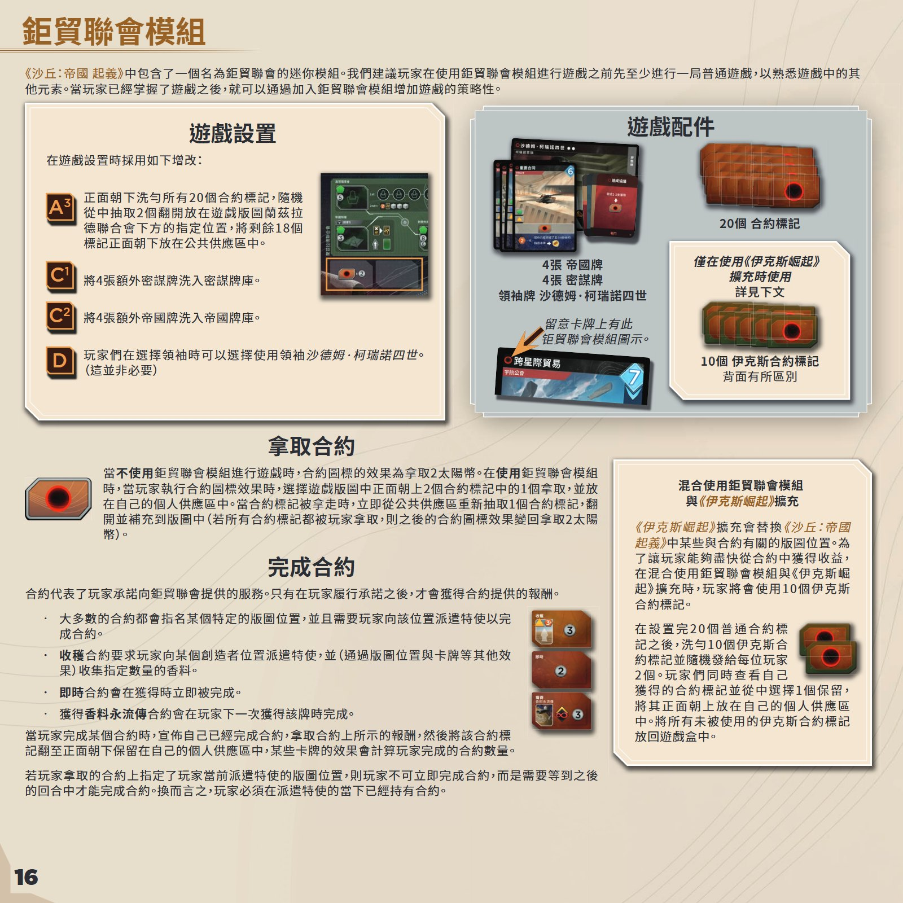
《沙丘：帝国——起义》附带一个名为 CHOAM 模块的迷你扩展。我们建议你先不带它至少玩一次，以熟悉游戏本身。等你得心应手之后，再加入 CHOAM 模块，获得更深的策略性。
设置
在设置中增改以下步骤：
A3 将 20 张合约正面朝下洗混，翻开其中 2 张正面朝上，放在游戏图板上兰兹拉德议会下方的标记处。其余 18 张正面朝下放入银行。
C1 将 4 张额外秘牌洗入你的秘牌牌组。
C2 将 4 张额外帝国牌洗入你的帝国牌组。
D 玩家可以选择沙达姆·科瑞诺四世作为自己的领袖（并非必须）。
组件
- 4 张帝国牌、4 张秘牌，以及沙达姆·科瑞诺四世。附加卡牌上印有此标识。
- 20 个合约指示物
- 10 个背面不同的合约指示物——仅配合《伊克斯崛起》扩展使用，见下文。
获取合约
不带 CHOAM 模块游戏时，合约图标只意味着你直接获得 2 帝国索，如图板所示。带 CHOAM 模块游戏时，该图标意味着你拿取图板上两张正面朝上的合约之一，放入你的供应堆。拿取时，从银行翻一张新的合约正面朝上补位。（若所有合约都已被玩家拿走，该图标恢复为让你获得 2 帝国索。）
完成合约
一张合约代表你为 CHOAM 公司履行某项服务的承诺。只有兑现承诺，你才能获得「报酬」。
- 大多数合约指明一个特定的图板地区：把特使派往该地区即告完成。
- 采集合约：把特使派往一个制造者地区，且在该回合中（合计、包括来自地区以外的来源）获得所示数量的香料，即告完成。
- 立即合约：拿取时即告完成。
- 获取『香料永流传』合约：你下一次获取该卡时即告完成。
完成一张合约时，宣布你已完成，获得它所示的奖励，然后将其翻为面朝下。把它留在你的供应堆中——某些卡牌会引用「已完成的合约」。
若你拿取的合约所涉及的图板地区，正是你本回合已经派出特使的地区，你必须等到未来的回合才能完成该合约。（也就是说，派出特使时你必须已经持有该合约。）
配合《伊克斯崛起》使用 CHOAM 模块
《伊克斯崛起》扩展替换了《起义》图板上一个可以拿取新合约的地点。作为补偿、并加速合约的完成，《起义》附带 10 张合约（背面不同），专门用于配合《伊克斯崛起》。
设置完 20 张标准合约后，将 10 张《伊克斯崛起》合约洗混，发给每位玩家各 2 张。每位玩家查看自己拿到的 2 张，同时选择想以哪一张开始游戏（正面朝上放入供应堆）。所有未被选择的《伊克斯崛起》合约放回游戏盒。
澄清与策略提示（第 17 页）
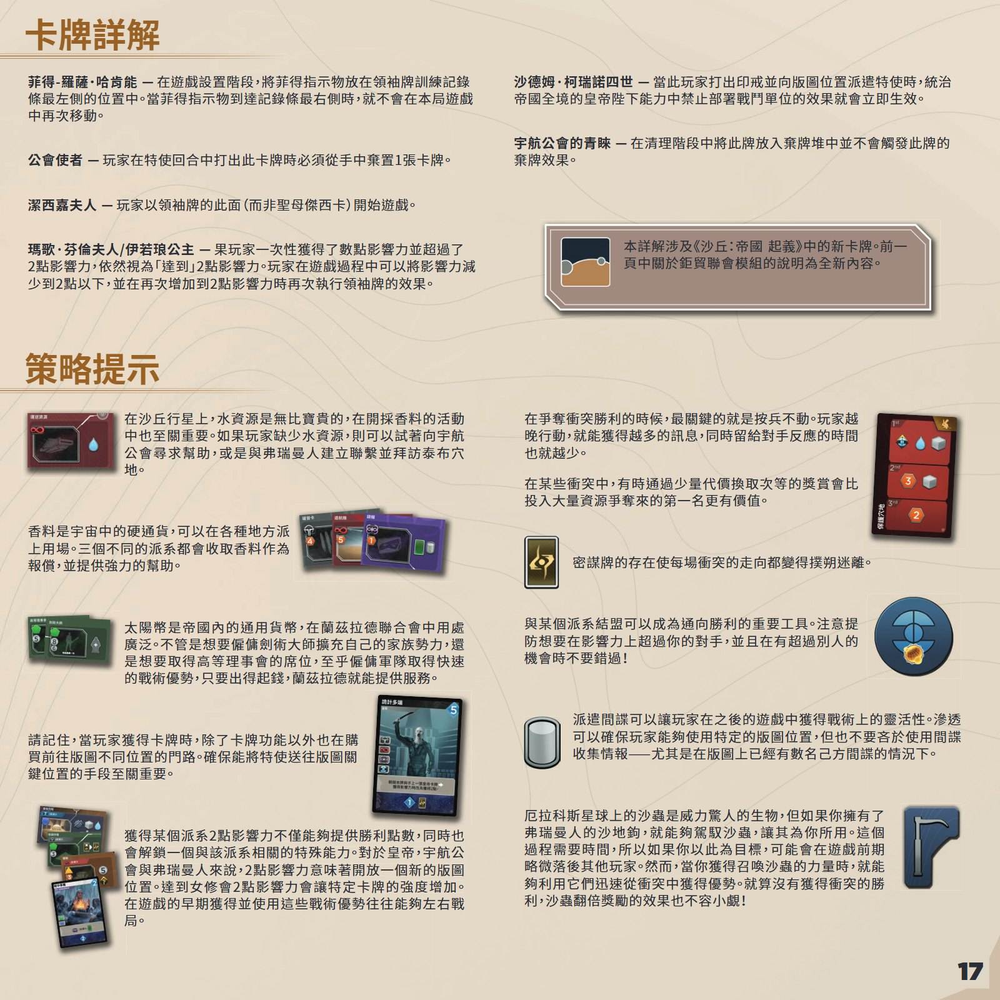
澄清
这些澄清针对《起义》的卡牌。对页的 CHOAM 模块是新内容。
菲德-罗萨·哈克南 — 设置时，把菲德指示物放在该领袖所印训练轨道最左侧的格上。当指示物到达最右侧的格时，其余游戏中它就留在那里。
杰西卡女士 — 你以领袖的这一面（而非「圣母杰西卡」）正面朝上开始游戏。
玛戈·芬伦夫人 / 伊勒琅公主 — 即使你在一次获得多点影响力时越过 2，也视为「达到」2。通过先失去影响力、之后再重获，你可以对同一阵营多次「达到」2 点影响力——不过只有沿影响力轨道上移时才算达到 2，下移不算。
沙达姆·科瑞诺四世 — 当你打出印章戒指把特使派往图板地区时，「已知宇宙的皇帝」对部署单位到冲突的限制立即生效。
公会恩惠 — 在清理步骤中把这张牌从场上移入你的弃牌堆，不会触发其弃牌能力。只有从手牌中弃掉它，才会触发该能力。
策略提示
水在沙丘上稀有而珍贵，是采集宝贵香料不可或缺之物。若你发现自己急需补给，宇航公会能提供关键援助。另一条路是赢得弗雷曼人的青睐，造访泰布穴地。
香料用途广泛，使用它的方式很多。三个阵营愿意以数量不等的香料提供宝贵的服务。
帝国索是帝国的货币，能润滑兰兹拉德议会的运转。无论你想以剑术大师或高等议会席位的形式进行升级，还是只想补充些部队，都别空手而来。
记住，当你为新牌组获取卡牌时，你所支付的其中一部分，是通往各个阵营的准入权。当心别让自己手中没有把特使派往关键图板地区的合适工具。
与某个阵营达到 2 点影响力，不仅提供胜利点数，还解锁与该阵营相关的独特能力：皇帝、宇航公会与弗雷曼人会开放一个新的图板地区；贝尼·杰瑟里特则让若干卡牌变得更强。尽快解锁其中一些能力，把它们化作你的优势。
说到赢得冲突，位置就是一切。你越晚投入单位，出手时掌握的信息就越多，对手作出反应的机会也越少。
有时在冲突中，以较低代价取得一场较小的胜利，比付出高昂代价的大胜更有价值。
秘牌意味着你永远无法断定一场冲突会倒向哪一边。
获得某个阵营的同盟，是你胜利之路上的强大资产。当心其他玩家试图从你身旁超越，也别错过反超他们的机会！
间谍能带来安全感：他们的渗透能力意味着，在他们侦查的地区你不会被挡在门外。不过，也别羞于召回他们去收集情报——尤其是当场上有多名间谍时。
沙丘的沙虫是大自然的强大力量。然而，在弗雷曼人的协助下，你有可能成为一名驭虫者。这个过程需要一些时间，所以若走上这条路，你在游戏中盘可能会落后于其他玩家。务必抓住每一个机会召唤沙虫、夺取冲突奖励，兑现你的投资。即使赢不下冲突，翻倍第二或第三名的奖励也可能十分重要！
与其他《沙丘：帝国》产品合玩（第 18 页）
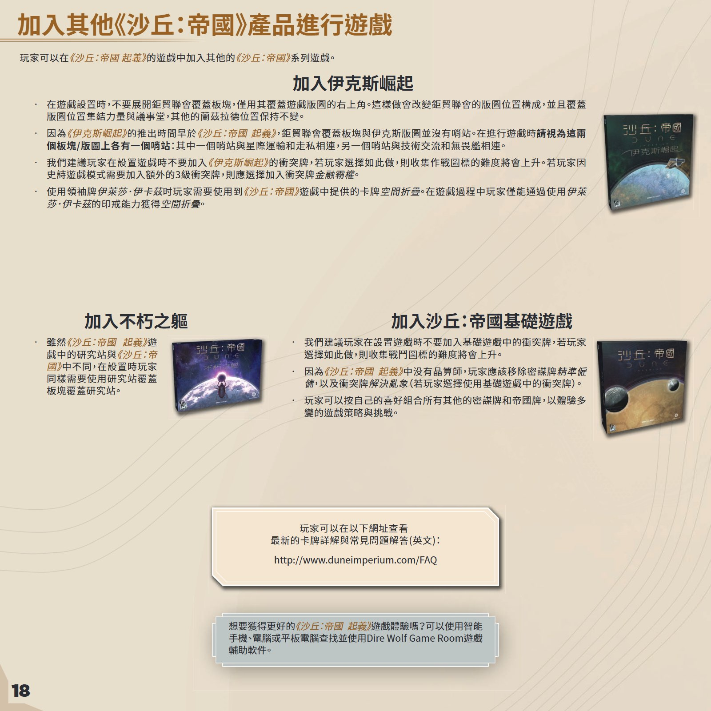
《沙丘：帝国——起义》兼容此前所有《沙丘：帝国》产品。
加入《伊克斯崛起》
- 设置时，将 CHOAM 图板覆膜对折，只盖住《起义》图板的右上角。这会形成一个新的 CHOAM 区域，盖住兰兹拉德的「集会堂」与「集结部队」地区，而《起义》兰兹拉德其余地区保持不变。
- 由于《伊克斯崛起》的发行早于《起义》，CHOAM 图板覆膜与伊克斯图板上没有印观察哨。视为这两块图板上各有一个观察哨游玩：一个观察哨与「星际船运和走私」相连，另一个与「技术谈判」和「无畏舰」相连。
- 我们建议不要加入《伊克斯崛起》的冲突牌。你愿意的话也可以加入，但这会让战斗图标的匹配稍显困难。（不过，游玩史诗游戏模式需要一张额外的三级冲突牌，此时应加入『经济霸权』。）
- 使用『伊利萨·埃卡兹』需要《沙丘：帝国》的折叠空间牌。（允许伊利萨·埃卡兹获取折叠空间牌，尽管其他人都无法获取。）
加入《不朽》
- 尽管《起义》中的「研究站」与初代《沙丘：帝国》图板上的不同，你仍应使用研究站覆膜将其盖住。
与初代《沙丘：帝国》合玩
- 我们建议不要加入《沙丘：帝国》的冲突牌。你愿意的话也可以加入，但这会让战斗图标的匹配更加困难。
- 由于《起义》中没有门泰特，你应当移除『精准雇佣』秘牌（以及——若你选择使用《沙丘：帝国》的冲突牌——『梳理混沌』冲突牌）。
- 你愿意的话，可以把所有其他秘牌与帝国牌同《起义》混洗，或者自行调配精选的《沙丘：帝国》与《起义》卡牌组合。
游戏规则的最新裁定与澄清，请查阅常见问题（FAQ）文档：http://www.duneimperium.com/FAQ
想提升你的《沙丘：帝国——起义》体验？请在 PC、智能手机或平板上试用 Dire Wolf Game Room 伴侣应用。
版权信息（第 19 页）
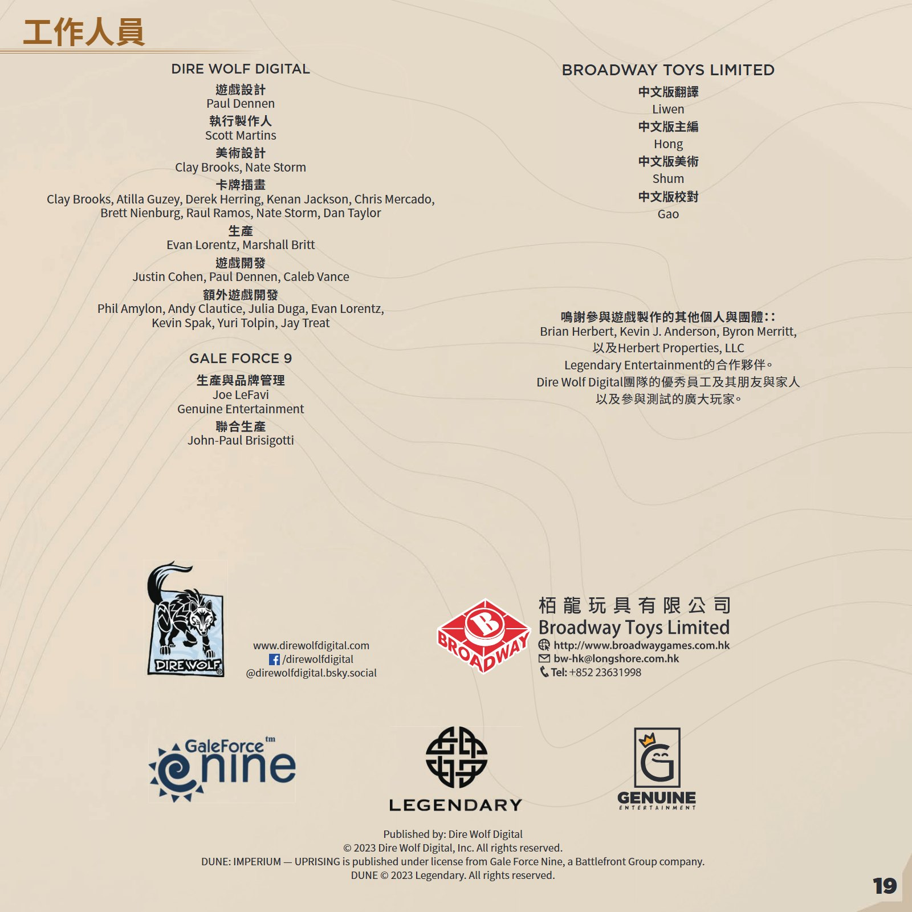
DIRE WOLF DIGITAL
- 游戏设计：Paul Dennen
- 执行制作人：Scott Martins
- 美术指导与平面设计：Clay Brooks, Nate Storm
- 卡牌插画：Clay Brooks, Atilla Guzey, Derek Herring, Kenan Jackson, Chris Mercado, Brett Nienburg, Raul Ramos, Nate Storm, Dan Taylor
- 制作：Evan Lorentz, Marshall Britt
- 游戏开发：Justin Cohen, Paul Dennen, Caleb Vance
- 其他游戏开发：Phil Amylon, Andy Clautice, Julia Duga, Evan Lorentz, Kevin Spak, Yuri Tolpin, Jay Treat
GALE FORCE NINE
- 制作人与品牌经理：Joe LeFavi
- Genuine Entertainment 联合制作人：John-Paul Brisigotti
特别感谢所有参与本游戏创作的人：Brian Herbert、Kevin J. Anderson、Byron Merritt 与 Herbert Properties, LLC；以及我们在传奇影业的合作伙伴；以及所有超棒的 Dire Wolf Digital 团队成员及其亲友——他们帮助测试了《沙丘：帝国——起义》。
www.direwolfdigital.com · /direwolfdigital · @direwolfdigital
出版方：Dire Wolf Digital。© 2023 Dire Wolf Digital, Inc. 保留所有权利。《沙丘：帝国——起义》经 Gale Force Nine（Battlefront 集团旗下公司）授权出版。
DUNE © 2023 Legendary. 保留所有权利。
图标指南与附加术语（第 20 页）
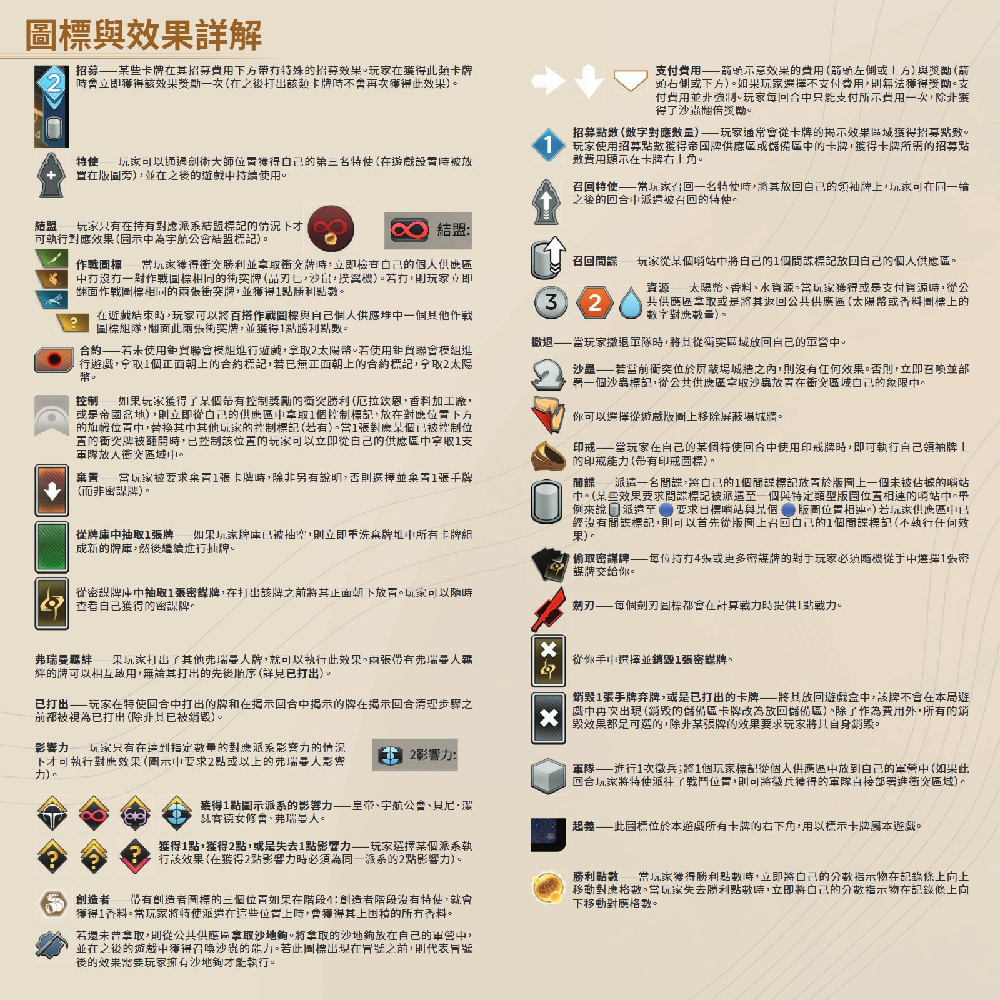
- 获取 — 某些卡牌在费用下方有一个特殊的获取框。你在获取该牌的那一刻（而非之后从手牌打出它时）获得此处的效果一次。
- 特使 — 通过「剑术大师」地区，你可以获得你的第三个特使（设置时放在图板旁），然后在其余游戏中使用它。
- 同盟 — 只有当你拥有所示阵营的同盟指示物时，你才可以使用此效果。（此处为与宇航公会的同盟。）
- 战斗图标 — 当你赢得一场冲突并把该牌收入供应堆时，检查你的供应堆中是否另有一张相同战斗图标（晶牙匕、沙漠鼠或扑翼机）的正面朝上卡牌。若有，把匹配的一对牌翻为面朝下，并获得 1 点胜利点数。
- 终局时，你可以把万能战斗图标与你供应堆中三种战斗图标之一匹配。把匹配的一对牌翻为面朝下，获得 1 点胜利点数。
- 合约 — 不带 CHOAM 模块游玩时，获得 2 帝国索。带 CHOAM 模块游玩时，拿取一张正面朝上的合约（若已无可拿，获得 2 帝国索）。
- 控制 — 若你赢得一场带有控制奖励（厄拉奇恩、香料精炼厂或帝国盆地）的冲突，把你的控制指示物放在该地区下方的旗帜上（替换该处对手的指示物）。当翻开的冲突牌对应你已控制的地区时，你可以从供应堆部署 1 个部队到冲突中。
- 弃一张牌 — 从你的手牌弃掉你选择的一张牌。（这条以及任何其他时候被指示弃牌：除非特别说明，不能弃秘牌。）
- 抽一张牌 — 从你的牌组抽 1 张牌。若你的牌组已空，将供应堆中的弃牌堆洗混组成新牌组，然后继续抽。
- 抽一张秘牌 — 从秘牌牌组抽 1 张牌。保持面朝下，直到你打出它。你可以随时查看。
- 弗雷曼纽带 — 只有当场上有你的一张或多张其他弗雷曼牌时，你才可以使用此效果。两张带有弗雷曼纽带的牌可以互相激活，无论打出的先后顺序。（见「在场」。）
- 在场 — 你在特使回合打出、在展示回合展示的卡牌保持正面朝上并「在场」，直到你在展示回合结束时清理它们（除非它们先被销毁）。
- 影响力要求 — 只有当你对指定阵营拥有至少所示数量的影响力时，你才可以使用此效果。（此处为对弗雷曼人 2 点或更多影响力。）
- 获得所示阵营的影响力：皇帝、宇航公会、贝尼·杰瑟里特或弗雷曼人。
- 获得 1 点、获得 2 点或失去 1 点影响力 — 任选四个阵营之一。（获得 2 点影响力时，不能分给两个不同的阵营。）
- 制造者 — 带制造者图标的图板地区，在「阶段 4：制造者」中若没有特使在场，各获得 1 个奖励香料。当你把特使派往这些图板地区之一，你获得那里全部的奖励香料。
- 驭虫钩 — 从银行拿取 1 个驭虫钩指示物（若你还没有）。放在你的兵营上，表示你现在拥有召唤沙虫的能力。当此图标用于冒号之前，它表示一项要求：你的兵营上须有驭虫钩指示物。
- 支付费用 — 箭头表示一项费用（箭头左侧或上方）与一项效果（箭头右侧或下方）。若你不支付费用，就得不到效果。你并非必须支付卡牌上的此类费用。你的每个回合中，此类费用至多支付一次（冲突牌上的奖励适用沙虫奖励翻倍时除外）。
- 说服力（所示数量） — 你获得的说服力主要来自卡牌的展示框。你用它获取帝国牌或备用牌，支付卡牌右上角所示的费用。
- 召回特使 — 把你图板上的另一个特使放回你的领袖处（不是你本回合派出的那个特使）。你可以在同一回合的另一特使回合中再次使用它。
- 召回间谍 — 把你的一个间谍从图板上的观察哨放回你的供应堆。
- 资源：帝国索、香料、水 — 当你获得一项资源或支付一项资源作为费用时，从银行拿取或退回银行。（帝国索与香料，按所示数量获得或支付。）
- 撤退 — 你撤退一个部队时，把它从冲突移回你的兵营。
- 沙虫 — 若当前冲突受屏障墙保护，则无事发生。否则，召唤并部署 1 条沙虫：从银行拿取，放入你在冲突区中的象限。
- 屏障墙引爆 — 你可以移除游戏图板上的屏障墙指示物。
- 印章戒指 — 当你在特使回合打出『印章戒指』牌时，你使用你领袖上相应的印章戒指技能。
- 间谍 — 放置 1 个间谍：从你的供应堆拿取，放在图板上一个未被占据的观察哨。（有些效果限制放置。例如某图示表示观察哨必须与图板地区相连。）若你的供应堆中没有间谍，你可以先无偿召回自己的一个间谍。
- 窃取秘牌 — 每位拥有 4 张或更多秘牌的对手，必须给你其中 1 张（随机选择）。
- 剑 — 每把剑为你在冲突中的战斗力总和增加 1 点战斗力。
- 销毁一张秘牌 — 从你的手牌中销毁你选择的一张秘牌。
- 销毁一张牌 — 从你的手牌、弃牌堆或场上的牌中销毁一张牌。将其放回游戏盒，本局游戏不再使用。（备用牌则放回备用牌叠。）除非是支付费用所需，或某张卡牌指示销毁其自身，销毁是可选的。
- 部队 — 招募 1 个部队：从你的供应堆拿取，放入游戏图板上的你的兵营。（若你是把特使派往战斗地区时招募的该部队，你可以将它部署到冲突。）
- 起义标识 — 此图标出现在本扩展所有卡牌的右下角附近。仅供参考。
- 胜利点数 — 当你获得 1 点胜利点数，将你的分数标记沿分数条上移一格。当你失去 1 点，则下移一格。